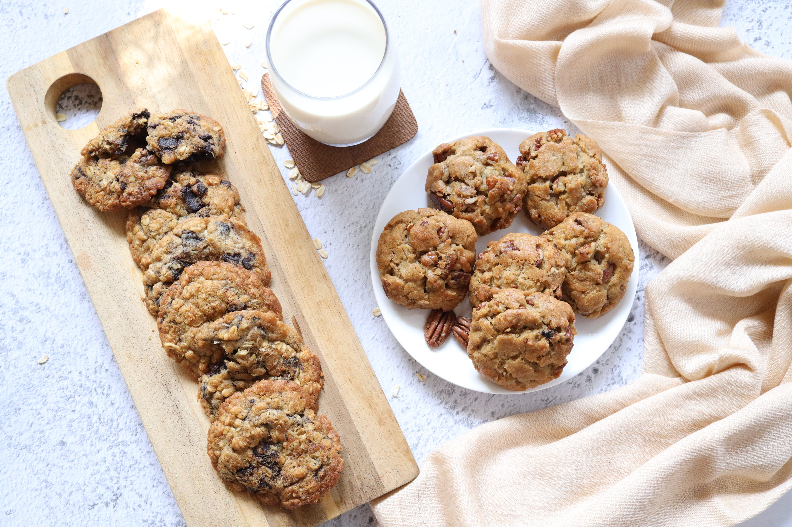

Home
Oatmeal Cookies

Description
Oatmeal Cookies are a classic baked treat known for their chewy texture, lightly crisp edges, and warm, comforting flavor. Made primarily with rolled or quick-cooking oats, flour, butter, sugar, and eggs, these cookies offer a delightful combination of sweetness and a slightly nutty taste. Their golden-brown appearance and soft, chewy centers make them a favorite snack for people of all ages.
The recipe for oatmeal cookies combines simple baking ingredients to create a delicious and satisfying homemade treat. The oats give the cookies their distinct texture, while the butter and sugar provide sweetness and richness. A hint of cinnamon and vanilla adds extra flavor, making each bite more enjoyable. They are best enjoyed as a snack or dessert, especially when paired with a glass of milk or a warm drink of your choice.
Ingredients:
- 2 cups all-purpose flour
- 1 ½ teaspoons ground cinnamon
- 1 teaspoon baking soda
- 1 teaspoon salt
- 1 cup unsalted butter, softened
- 1 cup white sugar
- 1 cup packed brown sugar
- 2 large eggs
- 1 teaspoon vanilla extract
- 3 cups quick-cooking oats
- Nonstick cooking spray with flour
- 2 tablespoons water
- 2 tablespoons white sugar, or as needed
Steps:
- Whisk flour, cinnamon, baking soda, and salt together in a medium bowl until well combined.
- Beat butter, 1 cup white sugar, and brown sugar in a large bowl with an electric mixer until creamy, at least 2 to 3 minutes.
- Beat in eggs, one at a time, then mix in vanilla.
- Gradually mix in dry ingredients until well combined. Add oats and mix until thoroughly incorporated.
- Cover the bowl and chill the dough in the refrigerator for at least 1 hour.
- When ready to bake, preheat the oven to 375 degrees F (190 degrees C). Spray two cookie sheets with floured cooking spray. Place water in a small bowl and 2 tablespoons sugar in another small bowl.
- Roll chilled dough into walnut-sized balls, and place 2 inches apart on the prepared cookie sheets. Dip a large fork in water, then in sugar, and use to flatten each cookie, rewetting and resugaring as necessary.
- Bake in the preheated oven until light golden brown around the edges and centers are nearly set, 8 to 10 minutes, switching racks halfway through.
- Allow cookies to cool on baking sheet for 5 minutes before transferring to a wire rack to cool completely.